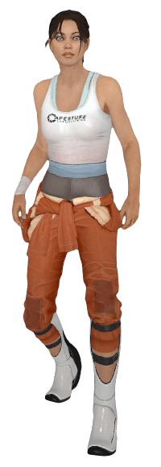

Chell

Background
Chell is a silent protagonist and the player character in the Portal series. She is a test subject in the Aperture Science Enrichment Center, where she is forced to navigate through a series of test chambers using the Aperture Science Handheld Portal Device (commonly known as the "portal gun"). Chell's identity and backstory are largely left unexplored in the games, allowing players to project themselves onto her character. She is known for her determination, intelligence, and resourcefulness in overcoming the challenges presented by the testing environment and the AI antagonist, GLaDOS.
Appearances
- Portal (2007)
- Portal 2 (2011)
Abilities
Chell's primary ability is her proficiency with the portal gun, which allows her to create linked portals on flat surfaces. This ability enables her to solve complex puzzles, navigate through the test chambers, and manipulate the environment to her advantage. Chell is also physically fit and agile, allowing her to perform various actions such as jumping, crouching, and climbing.
Personality
Chell is characterized by her resilience and determination. Despite the challenges she faces, she remains focused on her goal of escaping the Aperture Science facility. Her silent nature allows players to immerse themselves in her role, making her a relatable and iconic character in the gaming community. Chell's interactions with GLaDOS and other characters are limited, but her actions and choices throughout the games demonstrate her intelligence and problem-solving skills.